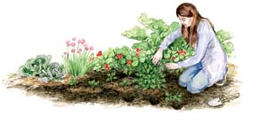
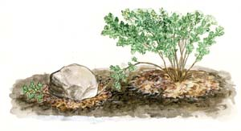

Easy Plant Propagation
Grow plants fast and easy with these easy traditional and low-tech propagation techniques.
By Barbara Pleasant
April/May 2008
The most common way to grow new plants is to sow seeds, but many plants also can be propagated vegetatively by rooting tip cuttings or stems, or dividing clumps. If you already have a healthy plant, vegetative propagation is often faster, easier and cheaper than growing more plants from seeds. It takes six weeks to grow a tomato seedling to transplanting size, but you can root a stem tip cutting in half that time. In five minutes, you can multiply one petunia or coleus into several happy plants, and it will cost you nothing to start a new planting of grapes by sticking pruned branches into a bed of moist soil.
No special equipment is needed to become an accomplished plant propagator, though it helps to carry a spirit of adventure into each new project, because each species responds differently to various techniques, and propagation often involves a serious injury or near-death event followed by recovery. Plants that are easy to propagate know how to handle this unnatural disaster.
Green Intelligence
If you were being chased by someone with a knife or about to be trampled by a herd of buffalo, you would run away or hide. Plants cannot, so they have devised fundamental ways to survive common catastrophes. On a cellular level, most plants stock their stems with “undifferentiated” cells that begin multiplying into specialized cells if the plant “decides” that its best shot at survival requires new stems, leaves or roots. These undifferentiated cells are most numerous in nodes - the places where branches and buds emerge from stems - and in buds that form on shallow roots and low-growing stems. Your job, as a propagator, is to identify where the plant is holding its caches of undifferentiated cells, and then provide perfect conditions to help those cells morph into beautiful new roots.
To get an up-close look at this process, start with a sprig of supermarket mint. Clip or pinch the lowest leaves from a 4-inch-long stem, stick it in a small water-filled glass or bottle for 10 days, and you should see the beginnings of tiny white roots emerging from the nodes and the sections of the stem between them. You can transplant the cutting to a pot as soon as the roots are a half inch long.
Many plants root readily in water, including tomatoes, hydrangeas, coleus and many culinary herbs, such as rosemary, marjoram and oregano. Keep in mind that warm temperatures are crucial to fast rooting in water. Basil and other plants that aren’t supposed to root from stem cuttings often do when kept in a sun-warmed window. And, though glass containers make it easy to keep an eye on rooting (or rotting) cuttings, dark-colored heavy pottery vases work even better, because they absorb and retain solar heat while shielding the roots from light.
Rooting in water is quick and easy for plants that can be propagated this way. Other plants will root best in soil or a soil-like medium such as perlite or vermiculite. Roots that form in water are structural wimps compared to those that grow in soil. Either of these mediums, or a mixture of half peat moss and half sand, will reduce problems with disease when you’re working with slow-rooting woody cuttings. To speed things up, many people use rooting powders or gels, which provide synthetic forms of several common plant hormones. However, research studies show that plants that root readily do not benefit from hormonal stimulation, plus there are natural alternatives you can make yourself at home (see “Rooting in Willow Water,” below). If you are working with a challenging plant (such as blueberries or another slow-growing woody plant), the Rooting Database hosted by the University of California is a magnificent source of information on success rates using various rooting mediums, rooting hormones and much more. Hundreds of challenging trees, shrubs and perennials are listed by common or botanical name. With the right technique, you can propagate almost any plant from a cutting.
Improving Your Luck
Herbaceous or green-stemmed cuttings (the most common type gardeners handle) root as readily in compost-amended potting soil as they do in sterile soilless mediums as long as six key factors receive close attention.
Choose a donor plant that has not yet begun flowering, but is approaching mature size. If the cuttings do have buds or flowers, snip them off. Rooted cuttings retain the general maturity level of their parents, but until they have enough roots to support reproduction, you should remove flowers that try to form.
Make sure the donor plant is in good condition. Water it the day before collecting cuttings, which are at their best during the morning hours.
Keep cuttings small - no more than 6 inches long - and remove all but the topmost three to four leaves. A few leaves help the cutting survive on light-derived energy, but too many will suck the cutting dry.
Temperatures must be kept warm, around 75 degrees Fahrenheit, so bottom heat from a warming mat (or heating pad) is especially beneficial. Outdoors, wait until after your last frost passes to try rooting anything (other than root-bearing divisions) directly in the garden.
Light levels should be low at first (around 50 percent) to suppress growth of new stems and leaves. The combination of warm soil temperatures and low light levels pushes the cuttings to send energy to developing roots.
Moisture around the buried stems must stay constant at all times. To reduce evaporation and increase humidity, use containers you can enclose in glass or plastic to keep humidity high. Until the cuttings can take up water through their yet-to-grow roots, high humidity is the best way to prevent moisture loss from the leaves and rooting medium.
For years I fashioned tents from plastic produce bags to make little greenhouses for rooting cuttings, but these days I use shoebox-size plastic storage boxes with clear or translucent lids. Filled with 3 inches or so of moist soil (or plastic cellpacks reused from bedding plant purchases), the boxes become mini-greenhouses that can be propped open during the day and closed at night. When I’m propagating only one or two tidbits, I use a 3-inch-wide, 6-inch-tall clear glass candle holder. To keep humidity high and light low during the first week or so, I cover the container with a small plate. After the plate is removed, the container’s tall sides help create humid conditions, like an open terrarium. A glass or translucent plastic cake cover makes a great impromptu propagation greenhouse, too.
It is not unusual to have 100 percent success with willing rooters such as mint, tomato or chrysanthemum, but with other plants you should expect significant failures. I often hope for a 50 percent success rate when propagating a plant for the first time, so I start twice as many cuttings as I think I need. Successful cuttings keep their color while failed ones slowly fade or flat-out collapse. Promptly remove corpses to prevent the buildup of root-devouring fungi. When you see signs of new growth, check for resistance from new roots by gently pulling on the cuttings. When it’s clear that cuttings have anchored themselves with new roots, get ready to move them to your garden.
Multiplying the Masses
Many perennial plants grow into colonies that expand with each passing season, so they are prime candidates for digging and dividing - the most straightforward way to make more plants. Simply dig up a clump of asters, echinacea, chives or strawberries, break or cut the mass into pieces with a few intact roots and at least one growing bud, and replant the divisions in hospitable spots. Thousands of plants can be propagated this way, including asparagus, bunching onions, horseradish, rhubarb and all types of ground covers. The appearance of new stems and leaves aboveground is usually accompanied by the growth of new roots down below, so plants divided in spring are usually nicely rooted by late summer.
Digging and dividing does destroy roots, so it’s good to relieve divided plants of at least half of their leaves and stems as you replant them - and to keep them well-watered for about a month after transplanting. As soon as new roots form, the plants should produce a nice flush of healthy new foliage.
More Propagation Options
- When pruning grapes in early spring, set aside 12- to 14-inch long sections of stem that have three or more nodes. Being careful to keep them right side up, push the ends that grew closest to the parent plant 6 inches deep in fertile, well-drained soil, and keep them moist. Those that take will be well rooted and ready to train or move by midsummer.
- spring, just as roses leaf out, take 6-inch-long cuttings from the tips of your favorites, remove the leaves from the bottom halves, and stick them 3 inches deep in a moist, fertile spot. Cover with quart canning jars for three to four weeks. You will know which cuttings are successful when they show new growth.
- You can root cuttings while they are still on the plant using the method called simple layering. Bend down a branch, and nick or scratch the stem where it touches the ground. Bury the “distressed” stem section beneath 2 inches of moist soil. If necessary, use a stone or U-shaped wire pin to hold the stem in place. Wait until new roots emerge to sever the cutting from the parent plant. This method works great with thyme, rosemary and other stiff-stemmed herbs, as well as raspberries, forsythia and most perennial vines.
Rooting in Willow Water
When you need to root challenging plants, you can borrow the natural rooting hormones found in willows, black locust and other fast-rooting plants. Set a handful of slender peeled willow or black locust branches to steep in a deep container of warm water overnight so the hormones can seep out into the water. Then let your new cuttings soak in the water overnight before setting them to root in containers.
|
 ELAYNE SEARS You can propagate your mums, phlox and other perennials in the spring by taking 3-inch cuttings from the new growth. Strip the leaves from the bottom 2 inches of the cuttings, then plant the cutting and cover it loosely with a handful of mulch to shade it. Keep the soil moist. In a few weeks you will see new growth. |
 ELAYNE SEARS Herb cuttings from mint, marjoram and oregano will form new roots if placed in a jar of warm water. This is best done in the spring when the plant is in its most active growth. |
 ELAYNE SEARS Plants such as raspberries, forsythia and mort perennial vines can be propagated by a technique known as layering. |